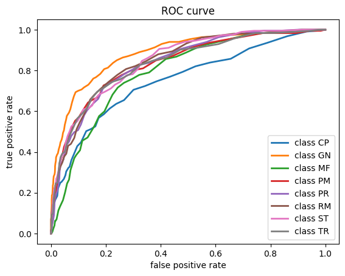
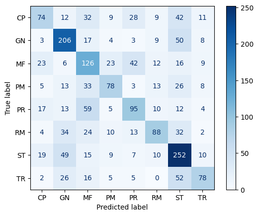

import numpy as np
import pandas as pd
import ast
import matplotlib.pyplot as plt
from nltk.cluster import KMeansClusterer, cosine_distance, euclidean_distance
from sklearn.feature_extraction.text import TfidfVectorizer, CountVectorizer
from sklearn import metrics
from nltk.corpus import stopwords
from sklearn import mixture
from sklearn.metrics.pairwise import cosine_similarity
import warnings
warnings.filterwarnings("ignore")
from sklearn.model_selection import train_test_split
from sklearn.ensemble import RandomForestClassifier
from sklearn.preprocessing import MultiLabelBinarizer
from sklearn.metrics import precision_recall_curve, roc_curve
from sklearn.multiclass import OneVsRestClassifier
from sklearn.metrics import ConfusionMatrixDisplay
from IPython.core.interactiveshell import InteractiveShell
InteractiveShell.ast_node_interactivity = "all"import os
from google.colab import drive
drive.mount('/content/drive') # mount the driveMounted at /content/drive#data_path = '/content/drive/My Drive/Final_proj/'
data_path = '/content/drive/My Drive/BIA667/Final Project/'
df = pd.read_csv(data_path+"bert_embeddings.csv")
embeddings_df = df.drop(columns=['Unnamed: 0'])
embeddings_df.head()| paper_id | updated | published | title | authors | summary | comment | link | doi | pdf_link | ... | x758 | x759 | x760 | x761 | x762 | x763 | x764 | x765 | x766 | x767 | |
|---|---|---|---|---|---|---|---|---|---|---|---|---|---|---|---|---|---|---|---|---|---|
| 0 | http://arxiv.org/abs/2304.13610v1 | 2023-04-26 15:05:19+00:00 | 2023-04-26 15:05:19+00:00 | Maximum Implied Variance Slope -- Practical As... | ["Fabien Le Floc'h", 'Winfried Koller'] | Maximum Implied Variance Slope -- Practical As... | NaN | http://arxiv.org/abs/2304.13610v1 | NaN | http://arxiv.org/pdf/2304.13610v1 | ... | -0.006476 | -0.232883 | -0.193446 | 0.046816 | -0.278641 | -0.420216 | -0.197272 | -0.048829 | -0.082687 | 0.439996 |
| 1 | http://arxiv.org/abs/2206.02582v2 | 2023-04-26 13:13:28+00:00 | 2022-06-06 12:43:06+00:00 | Making heads or tails of systemic risk measures | ['Aleksy Leeuwenkamp'] | Making heads or tails of systemic risk measure... | Revised version of the $\Delta$-CoES paper, no... | http://arxiv.org/abs/2206.02582v2 | NaN | http://arxiv.org/pdf/2206.02582v2 | ... | -0.149508 | -0.160621 | -0.250387 | -0.054146 | -0.316383 | -0.395322 | -0.337699 | -0.328789 | 0.033148 | 0.372287 |
| 2 | http://arxiv.org/abs/2301.00790v2 | 2023-04-26 10:56:51+00:00 | 2022-12-30 17:19:00+00:00 | Dynamic Feature Engineering and model selectio... | ['Thomas Wong', 'Mauricio Barahona'] | Dynamic Feature Engineering and model selectio... | NaN | http://arxiv.org/abs/2301.00790v2 | NaN | http://arxiv.org/pdf/2301.00790v2 | ... | -0.213331 | -0.276196 | -0.192677 | -0.023698 | -0.290676 | -0.251346 | -0.158298 | -0.411816 | -0.089801 | 0.378311 |
| 3 | http://arxiv.org/abs/2304.13402v1 | 2023-04-26 09:28:41+00:00 | 2023-04-26 09:28:41+00:00 | Convexity adjustments à la Malliavin | ['David García-Lorite', 'Raul Merino'] | Convexity adjustments à la Malliavin In this ... | NaN | http://arxiv.org/abs/2304.13402v1 | NaN | http://arxiv.org/pdf/2304.13402v1 | ... | -0.001260 | -0.162045 | -0.476206 | -0.060368 | -0.249610 | -0.298294 | -0.164128 | -0.035170 | 0.047379 | 0.358566 |
| 4 | http://arxiv.org/abs/2304.13128v1 | 2023-04-25 20:16:36+00:00 | 2023-04-25 20:16:36+00:00 | Learning Volatility Surfaces using Generative ... | ['Andrew Na', 'Meixin Zhang', 'Justin Wan'] | Learning Volatility Surfaces using Generative ... | This is a working draft | http://arxiv.org/abs/2304.13128v1 | NaN | http://arxiv.org/pdf/2304.13128v1 | ... | -0.293317 | -0.257803 | -0.157204 | -0.021314 | -0.284447 | -0.150996 | -0.072684 | -0.162023 | 0.086110 | 0.400750 |
5 rows × 795 columns
BERT
In Deep Learning Module, we applied the bert tokenizer and bert model and got a tensor with shape (9674, 200, 768). We took the mean value along its second dimension and retained a vector with size 768 for each document. We used this vector as the features and applied unsupervised method as cluster and supverised machine learning models like Random Forest.
BERT Clustering
features = []
for i in range(768):
features.append('x'+str(i))def cluster_bert(train_data, test_data, num_clusters, method = 'k-mean'):
train_temp = train_data.copy()
test_temp = test_data.copy()
#train_temp["tokenized_summary"] = train_data["tokenized_summary"].apply(lambda x: ' '.join(x))
#test_temp["tokenized_summary"] = test_data["tokenized_summary"].apply(lambda x: ' '.join(x))
X_train = train_temp[features].values
X_test = test_temp[features].values
# add your code
if method == 'k-mean':
clusterer = KMeansClusterer(num_clusters, cosine_distance, repeats=30)
#tfidf_vect = TfidfVectorizer(stop_words=stopwords, min_df=min_df)
#dtm = tfidf_vect.fit_transform(train_temp["tokenized_summary"])
#X_train = train_data[features]
#X_test = test_data[features]
clusters = clusterer.cluster(X_train, assign_clusters=True)
#test_dtm = tfidf_vect.transform(test_temp["summary"])
predicted = [clusterer.classify(v) for v in X_test]
elif method == 'gmm':
gmm = mixture.GaussianMixture(n_components=num_clusters,
covariance_type='diag', random_state=42)
#tfidf_vect = TfidfVectorizer(stop_words=stopwords, min_df=min_df)
#dtm= tfidf_vect.fit_transform(train_temp["tokenized_summary"])
gmm.fit(X_train)
#test_dtm = tfidf_vect.transform(test_temp["tokenized_summary"])
predicted = gmm.predict(X_test)
confusion_df = pd.DataFrame(list(zip(test_temp["subcategory"].values, predicted)),columns = ["label", "cluster"])
print (pd.crosstab( index=confusion_df.cluster, columns=confusion_df.label))
#Apply majority vote rule to dynamically map each cluster to a ground-truth label in test_data
label_allocation = pd.DataFrame(confusion_df.groupby('cluster')['label'].apply\
(lambda x: x.value_counts().idxmax()))
for i in range(num_clusters):
print ('Cluster {} -> Topic {}'.format(i,label_allocation['label'][i]))
#classification report
cluster_dict = {}
for i in range(num_clusters):
cluster_dict[i] = label_allocation['label'][i]
predicted_target=[cluster_dict[i] for i in predicted]
print(metrics.classification_report(test_temp["subcategory"], predicted_target))
return Nonetrain_df, test_df= train_test_split(embeddings_df, test_size=0.2, random_state=42)cluster_bert(train_df, test_df, num_clusters = 8, method = 'k-mean')label CP GN MF PM PR RM ST TR
cluster
0 21 34 30 20 22 25 26 16
1 35 13 61 37 39 21 20 12
2 13 48 10 15 9 32 45 31
3 41 7 59 17 51 12 39 3
4 57 16 35 34 35 32 76 24
5 16 26 54 39 38 31 18 35
6 12 64 3 5 5 19 90 28
7 22 92 5 12 16 35 57 35
Cluster 0 -> Topic GN
Cluster 1 -> Topic MF
Cluster 2 -> Topic GN
Cluster 3 -> Topic MF
Cluster 4 -> Topic ST
Cluster 5 -> Topic MF
Cluster 6 -> Topic ST
Cluster 7 -> Topic GN
precision recall f1-score support
CP 0.00 0.00 0.00 217
GN 0.26 0.58 0.36 300
MF 0.24 0.68 0.35 257
PM 0.00 0.00 0.00 179
PR 0.00 0.00 0.00 215
RM 0.00 0.00 0.00 207
ST 0.31 0.45 0.37 371
TR 0.00 0.00 0.00 184
accuracy 0.27 1930
macro avg 0.10 0.21 0.13 1930
weighted avg 0.13 0.27 0.17 1930
BERT+Random Forest
categories = np.unique(embeddings_df['subcategory']).tolist()train_df, test_df= train_test_split(embeddings_df, test_size=0.2, random_state=42)
X_train = train_df[features].values
y_train = train_df[categories]
X_test = test_df[features].values
y_test = test_df[categories].valuesmodel = OneVsRestClassifier(RandomForestClassifier());
model.fit(X_train, y_train)
#y_pred = model.predict(X_test)
predict_p = model.predict_proba(X_test)
y_pred = np.zeros_like(predict_p)
y_pred[np.arange(len(predict_p)), predict_p.argmax(1)] = 1
#y_pred
print(metrics.classification_report(y_test, y_pred,target_names = categories))OneVsRestClassifier(estimator=RandomForestClassifier())In a Jupyter environment, please rerun this cell to show the HTML representation or trust the notebook.
On GitHub, the HTML representation is unable to render, please try loading this page with nbviewer.org.
OneVsRestClassifier(estimator=RandomForestClassifier())
RandomForestClassifier()
RandomForestClassifier()
precision recall f1-score support
CP 0.50 0.34 0.41 217
GN 0.57 0.69 0.63 300
MF 0.39 0.49 0.44 257
PM 0.55 0.44 0.48 179
PR 0.48 0.44 0.46 215
RM 0.58 0.43 0.49 207
ST 0.52 0.68 0.59 371
TR 0.60 0.42 0.50 184
micro avg 0.52 0.52 0.52 1930
macro avg 0.53 0.49 0.50 1930
weighted avg 0.52 0.52 0.51 1930
samples avg 0.52 0.52 0.52 1930
#prc curve
precision = dict()
recall = dict()
for i in range(len(categories)):
precision[i], recall[i], _ = precision_recall_curve(y_test[:, i],
predict_p[:, i])
plt.plot(recall[i], precision[i], lw=2, label='class {}'.format(categories[i]))
plt.xlabel("Recall")
plt.ylabel("Precision")
plt.title("Precision-Recall Curve")
plt.legend(loc="lower left")
plt.show();
# roc curve
fpr = dict()
tpr = dict()
for i in range(len(categories)):
fpr[i], tpr[i], _ = roc_curve(y_test[:, i],predict_p[:, i])
plt.plot(fpr[i], tpr[i], lw=2, label='class {}'.format(categories[i]))
plt.xlabel("false positive rate")
plt.ylabel("true positive rate")
plt.legend(loc="best")
plt.title("ROC curve")
plt.show();label_dict = dict()
for i in range(8):
label_dict[i] = categories[i]
y_pred = np.argmax(y_pred, axis=1)
y_test = np.argmax(y_test, axis=1)
y_true_labels = [label_dict[num] for num in y_test]
y_pred_labels = [label_dict[num] for num in y_pred]
ConfusionMatrixDisplay.from_predictions(y_true_labels, y_pred_labels,cmap=plt.cm.Blues,values_format='g');